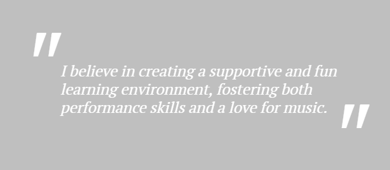

|
Arrowsmith Piano
Over 30 Years of Experience out of the Love of Music
|
Jane taught me for over 10 years.
She has not only taught me how to play piano but a true and long lasting love for creating music. Music continues to have a positive impact on my life! - Emily Beaton, U of T Masters |
Not only was Jane a patient, kind teacher, she was a friend.
With her, I came to appreciate music. She kindly supported my own foray into piano teaching. Highly Recommend! - Amanda Carpenter, Piano Teacher |
I will forever be thankful to Jane.
She not only taught me how to play piano, but how to improve at it myself. She really established piano as a permanent part of my life that I plan to carry indefinitely. - David Bellamy, Harvard PhD |
Jane is a thoughtful, patient and fun piano teacher!
She's excellent with students of all ages, backgrounds, and skill levels. Her rates were reasonable and her hours were flexible! - Sam Tacit, University of Waterloo |
|
Beginners of ages and levels are welcome. Classes are tailored to meet each student’s goal.
Those pursuing piano exams are prepared with pieces, technique, sight reading and ear training.
Those pursuing theory exams are prepared with specialized readings, materials and mock exams.
Lessons are recommended once a week to ensure regular progress. There are many method books for students not wishing to pursue the conservatory study. Summer lessons are available and recommended for senior students, especially those taking exams during the summer session. |
 |
|
|
| Class Lengths | Musical Styles |
|
|
|
STUDENT ACHIEVEMENTS |
|||||||||||||||||||||
|
|
||||||||||||||||||||
|
|||||||||||||||||||||
BENEFITS OF MUSIC EDUCATION |
||||||||||||||
|
The benefits of music are profound for people of all ages. Not only is music a versatile talent and skill, but a means of self-expression and stress relief. Music elevates performance abilities and sharpens concentration. It is multi-faceted in nature and harnesses creativity and skills that last a lifetime.
All benefits and studies listed come directly from |
|
|||||||||||||
|